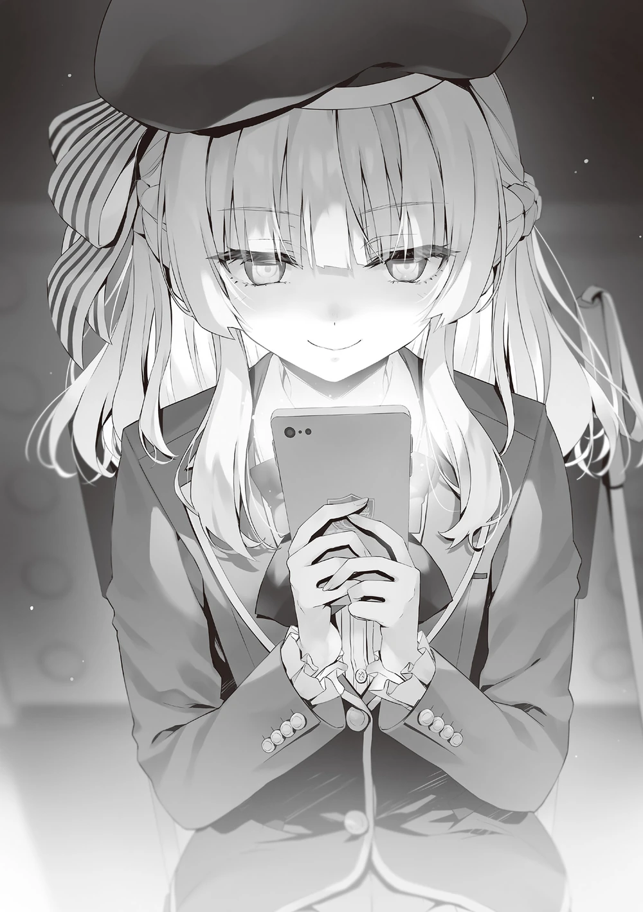

Sakayanagi, Horikita’nın sınıfındaki beş adayını öğretmene bildirdikten sonra, Hashimoto ayağa kalktı ve Sakayanagi’ye doğru yürüdü.
Yüzünde her zamanki hafif gülümsemesi yoktu; aksine oldukça ciddiydi. Herkes yerinde otururken yalnızca onun hareket etmesi, dikkatleri onun üstüne çekmişti.
“Sorun ne, Hashimoto-kun?”
“Dün geceki konuyu hatırlatayım dedim, olur da unutmuşsundur diye. Sana verdiğim istihbaratı kullanmaya hiç niyetin yok mu?”
Arkasındaki ekranda görünen öğrenci isimlerini başparmağıyla işaret etti.
Kategori: Gurme Yemek
Zorluk Seviyesi: 1
Saldıran Takımın Adayları: Kōenji Rokusuke, Hasebe Haruka, Hirata Yōsuke, Yukimura Teruhiko, Onodera Kayano
“Sana öyle mi görünüyor?”
“Evet, tam olarak öyle görünüyor.”
“Gerçekten de, dün geceki telefon görüşmen biraz fazla ısrarcıydı. Yine de bilgi, bilgidir. Tabii ki bunu tamamen göz ardı etmeyeceğim.”
“Öyleyse… neden Kōenji’yi hedef aldın?”
“Kōenji-kun’un B sınıfı içinde hedef almam gereken en son kişi olduğunu söylemiştin, değil mi?”
“Onun Horikita ile bir anlaşması var. Yani, korunan öğrencilerden biri olabilir ve eğer onu hedef alırsan, büyük ihtimalle otomatik olarak bir puan kazanacaklar. Sana verdiğim istihbaratta bunun işine yarayacağını düşünmüştüm.”
İstihbaratının bu kadar çabuk göz ardı edilmesi sabrını taşırmıştı. Normalde neşeli olan tavrındaki değişimi fark eden Kitō, sandalyesini yavaşça geri çekti.
“Endişelenme, Kitō-kun. Hashimoto-kun’un konuşma tarzı serttir.”
Sakayanagi hafifçe güldü ve ardından neden Kōenji’yi hedef aldığını açıkladı; üstelik Kōenji büyük ihtimalle korunan bir öğrenciydi.
“Horikita-san ve Kōenji-kun’un bir anlaşması olabilir, ancak bu anlaşma sadece onun okuldan atılmasını önleyip istediğini yapmasına izin vermekle ilgili.”
“Anlıyorum…”
“Onu sürekli koruyarak değerli bir koruma hakkını boşa harcamak mantıklı olmaz. En azından, hedef alındığında bir soruyu yanlış yapıp yapmayacağını görmek için beklemeliyiz. Kazanmak için en azından bu kadarını yapmamız gerekmiyor mu, sence de?”
“Ama Horikita dürüst bir insan. Eğer sınıfı, Kōenji’yi korumadığını görürse, bu onları sarsabilir.”
“Eğer böyle bir şey onları sarsacaksa, sarsılsınlar. Ayrıca, verdikleri sözü tutmak önemli olsa da, Kōenji-kun’u sürekli koruyarak değerli bir koruma hakkını boşa harcamak… Bu, liderlik vasıflarını sorgulatırdı.”
Sakayanagi’nin açıklamasına göre, Horikita’nın sınıfı koruyacakları beş kişiyi belirlemişti ve monitördeki görüntü değişti.
Hiçbir başarılı koruma yoktu ve Sakayanagi’nin hedef aldığı beş kişi soruyu cevaplamaya devam edecekti.
“Ne dersin? Beklendiği gibi, Kōenji-kun’a koruma hakkı verilmedi.”
Sonuçları gören Hashimoto, bu konuda güçlü bir argüman öne süremedi.
“…Eh, sanırım öyle. Ama Kōenji’den puan almaya çalışmanın bir anlamı var mı? O tuhaf bir şekilde keskin zekâlı, değil mi? Küçük balıklara kıyasla doğru cevap verme ihtimali daha yüksek, öyle değil mi?”
“Gerçekten öyle mi düşünüyorsun? O, kesinlikle özgür bir adam. Horikita-san’dan bile bu konuda onay almayı başardığına göre, ciddi şekilde cevap vermek zorunda değil. Bilerek yanlış cevap verebilir.”
Sanki geleceği görebiliyormuş gibi, Sakayanagi’nin inancı en ufak bir tereddüt göstermedi.
Hashimoto inanamayarak monitörün değişmesini bekledi.
Ve sonuç olarak, tam da tahmin edildiği gibi, Kōenji soruya yanlış cevap verdi ve elenmeye bir adım daha yaklaştı.
“Biraz risk aldın ama yine de bir puan kazandın. Tebrikler, Prenses.”
Hashimoto bir anlığına rahatlamıştı, ancak bu rahatlık bir sonraki turda hızla yok olacaktı.
Saldıran taraf olarak sırası geldiği anda, Sakayanagi doğrudan Kōenji’nin adını söyledi.
Üstelik kategori de aynıydı; sanki onu kasıtlı olarak hedef aldığını doğrulamak istiyordu.
Sadece Hashimoto değil, seçimlerin akışını takip eden diğer sınıf arkadaşları da huzursuz olmaya başladı.
“Ne oluyor? Yine aynı kategori ve bu sefer Kōenji’yi koruyacaklar.”
Sakayanagi’nin hamlesini anlayamayan Kamuro da tepki gösterdi.
“Bana bir sonraki sefer de korumayacaklarını söylemeyeceksin, değil mi…?”
“Bence de öyle olacak. İşte bu yüzden özellikle Kōenji-kun’u aday gösterdim.”
Bunu saçma bir tahmin olarak görse de yerinden kalkmadı ve olacakları görmek için monitöre odaklandı.
Başarıyla Korunan Savunma Oyuncuları: Yok
“Cidden… Horikita ne düşünüyor?”
Hashimoto, Kōenji’nin bir kez daha korunmadığını görünce homurdandı.
Üstelik Kōenji inanılmaz bir şey yaptı ve yine aynı hatayı tekrarladı.
“Hashimoto’nun tarafını tutmak istemem ama neden ikinci kez korunmayacağını düşündün?”
“İlk seferdeki mantıkla aynı. İki kez hata yapma hakkı var bu yüzden, onu korumak için ekstra bir çaba harcamasına gerek yoktu. Sonunda koruması gerekeceğini biliyorsa, bunu en sona bırakırdı. Yine de, Horikita-san muhtemelen onun doğru cevabı vermesini istemiştir.”
“Anlıyorum. Yani Horikita’nın artık Kōenji’yi korumaktan başka seçeneği yok.” Bu sözleri anladıktan sonra Kitō kendi kendine mırıldandı.
Horikita, Kōenji’nin hata yapma payı olduğunu düşündüğü sürece ona koruma hakkı tahsis etmeyecekti.
Başka bir deyişle, Sakayanagi, rakibin sonraki turlarda bir hakkını kaybetmesini sağlamak için bir risk almıştı. Olay böyle yorumlanıyordu.
Arka arkaya gelen iki ‘Gurme Yemekler’ sorusunun kolay olması kaçınılmazdı.
Şu anda her sınıf, her kategoriye ait zorluk seviyesini öğrenme sürecindeydi.
“Şüphe duyduğum için özür dilerim, Prenses. Demek bir plan vardı. Ancak Kōenji’yi ilk turdan hedef alman mümkün değil miydi? Böylece rakibin koruma hakkını kalan sekiz tur boyunca ortadan kaldırabilirdin. Bir tur boşa gitmiş oldu.”
“Kōenji-kun’u korumayacaklarından %99 emin olsam da, ikinci turda hedef almayı tercih ettim ki kesinlikle onu korumayacaklarından emin olayım. Ayrıca onun ikinci hatasını davet etmek için zemin hazırlamak da önemliydi. Peki, ya ilk turdan başlamış olsaydım ve Horikita-san Kōenji-kun’u korumaya karar verseydi? O durumda hareket etmem zorlaşırdı.”
Koruma hakları tarafından yönlendirilme riski vardı.
Eğer savunma art arda başarıyla gerçekleşirse, bu bir rehavet ortamı oluşturabilir ve böylece rakibe avantajı kaptırma riski doğabilirdi.
“Üstelik, ilk kolay soruda hata yapması sayesinde, ikinci kez yanlış cevap verme olasılığının daha yüksek olduğunu anlayabildim, bu yüzden sonuçlar tatmin edici—tüm bunlar senin sağladığın istihbarat sayesinde.”
Bilginin gerçekten işe yaradığını vurgulayan bu sözler karşısında Hashimoto da rahatladı ve başını sallayarak yerine oturdu.
“Şimdi, Kōenji-kun’u bitirelim, olur mu?”
Dördüncü turda, Sakayanagi, Kōenji’yi üçüncü kez aday olarak seçti ve yine herkesi şaşırttı.
“Dikkatli olmalıyız. Bu, fırsat bulduğumuz her an onu hedef alacağımıza dair bir tehdit oluşturacaktır. Hashimoto-kun’un istihbarat çalışmaları sayesinde Horikita-san’ın sınıfının iç işleyişini biliyoruz, ancak rakip taraf, Kōenji-kun ile yapılan anlaşmanın açığa çıktığını bilmiyor.”
“Anlıyorum… Kesinlikle, bu onların Kōenji’yi korumaya devam etmeleri gerektiğini düşünmelerine yol açar.”
Sakayanagi, yine ‘Gurme Yemekler’ kategorisini seçti ancak bu kez zorluk seviyesini 2’ye yükselterek soruların zorlaşmasını gözlemlemek istedi.
Hashimoto, Kōenji’nin korunacağını düşündü ancak bunu dile getirme gereği duymadı.
Fakat burada, çok az kişinin beklediği bir gelişme yaşandı.
Başarıyla Korunan Savunma Üyeleri: Shinohara Satsuki, Sudō Ken
Horikita, Kōenji’yi korumama gibi düşünülemez bir karar aldı.
“Neden onu korumadı?”
“Bana verdiğin istihbaratta yanlışlık olabilir mi?”
“Bu imkânsız…! Horikita kesinlikle Kōenji’yi koruyacağına dair söz verdi!”
Sonunda, Kōenji doğru cevabı verdi ve elenmekten kurtuldu.
Ancak Hashimoto hâlâ kafası karışmış durumdaydı.
Öte yandan, Sakayanagi durumu kavramayı başardı.
Horikita, Kōenji için bir koruma hakkı harcamamıştı, bu yüzden iki kez yanlış cevap verdikten sonra elenmemek için doğru cevap vermek zorunda kalmıştı.
“Demek Horikita, Kōenji’yi gözden çıkardı…”
“O zaman bu bizim fırsatımız. Onu tek seferde ezebiliriz.”
Olumsuz düşünmek yerine, Kitō artık Kōenji’yi hedef almaları gerektiğini söyledi.
“Doğru, bu iyi bir fikir olabilir. Horikita’nın güvenilirliği ve sınıfın morali sarsılır.”
Hashimoto, Horikita’nın koruma hakkını kullanmamasının rakip sınıfta kargaşaya yol açtığını düşündü.
Öte yandan, Sakayanagi farklı bir sonuca vardı.
“Onu koşulsuz şartsız koruyabilirler diye düşünüyordum ya da daha iyisi, onu tamamen eleyebilirdik… ama anlaşılan Horikita-san’ın farklı bir planı var. Eğer Kōenji-kun’u hedef almaya devam edersek, bu sadece onun hoşuna gider.”
Hafifçe gülümseyerek telefonunu açtı Sakayanagi.
“Yine de benimle nasıl savaşacağını dikkatlice düşündüğüne hayran kaldım.”
Sakayanagi, Horikita’nın arkasında Ayanokōji’nin olup olmadığını merak etti. Bu taktiklerin arkasındaki asıl itici güç kimdi?
“O kesinlikle bu işin içinde değil.”
Eğer Ayanokōji ipleri elinde tutuyor olsaydı, bunu sınıf ortamının ötesinde hissederdi. Alışılmadık, garip bir his, Sakayanagi’nin içini delerdi. Böyle bir his duymuyordu.
Ancak, Horikita’nın düşünce tarzında Ayanokōji’den hafif bir iz vardı.
“Gelişmesi gayet doğal. Onun arkasını herkesten daha yakından görüyor.”
Bu eğilimi fark edebiliyordu. Sakayanagi, bu taktik savaşında Horikita’nın gerisinde kalmayacaktı.
“Asıl mesele—”

Sınıf A’nın lideri olan Sakayanagi için en endişe verici şey belirli bir sınıf değildi. İki ya da üç sınıfın gizlice iş birliği yapıp yapmadığı… asıl sorun buydu.
Sakayanagi’nin tek endişesi de buydu.
Özel sınav duyurulduğundan beri bazı araştırmalar ve gözetlemeler yapmış olmasına rağmen, böyle bir hareketliliğe dair herhangi bir işaret ya da rapor yoktu.
Ancak gizli ittifaklar kurmak kolaydı. Bu yüzden, bir ittifak olup olmadığını ancak sınav sırasında anlayabilirdi.
Yine de şu an için kendisine karşı bir iş birliği yapıldığı ihtimalinin neredeyse sıfır olduğunu düşünüyordu.
Diğer sınıfların saldırı ve savunmalarında olağan dışı hiçbir şey yoktu.
“Birinci sırayı almaya gidelim mi?”
Sakayanagi, ilk yarının sonunda 29 puan kazanarak liderliği ele geçirmişti. Birinci sırada olmak hoş bir histi, ancak hemen arkasından yalnızca bir puan farkla B Sınıfı geliyordu.
Oturduğu yerden kalkmayı unutan Hashimoto, ekranda görüntülenen sonuçlara ve mola için kalan süreye bakıyordu.
“Masumi-san, benimle öğle yemeğine gelmek ister misin? Sonuçta elendiğin için bir sorun olmaz, değil mi?”
“Bana fark etmez, ama rakiplerin hakkında gerçekten hiç endişelenmiyorsun, değil mi?”
Sakayanagi övülmemiş olmasına rağmen mutlu bir şekilde gülümsedi ve bastonuyla yürümeye başladı.
Koridora adım attıklarında, Kitō iki kişiyi görünce sessizce kenara çekildi.
“Onu ne zaman davet ettin?”
“Az önce telefonda.”
“Hımm. Peki ya Hashimoto’yu davet etmene gerek yok mu?”
Kamuro ve Kitō birlikte olduğunda, Hashimoto da neredeyse her zaman onlarla olurdu. Belli ki bunu garipsemişlerdi.
“Ona da düzgünce davette bulundum, ama reddetti. Ryūen-kun tarafından hedef alınıyor ve çoktan iki hata yaptı. Elenmek istememesi gayet doğal.”
Hashimoto’nun panikle istihbarat topladığını hayal eden Kamuro, kuru bir kahkaha attı.